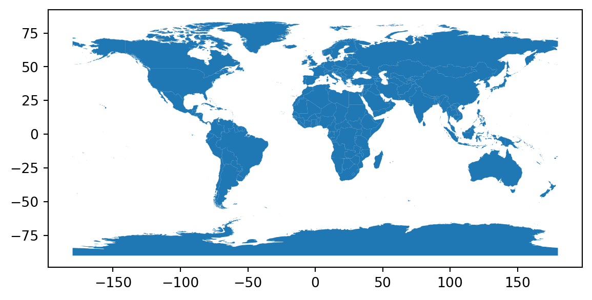
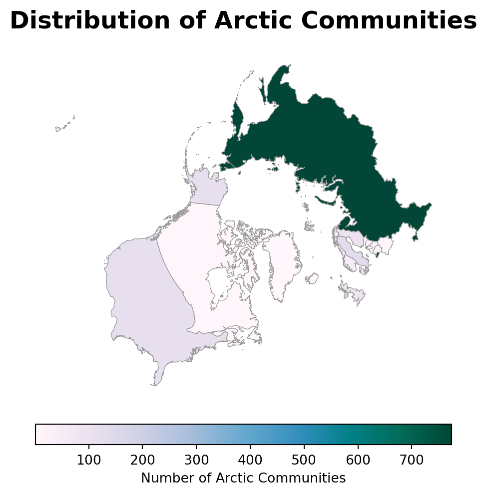

The third dataset we will use is a CSV file with the country codes and names of the Arctic countries in the Arctic communities dataset. This dataset was created for educational purposes for this lesson based on the metadata of the Arctic communities dataset and the country names in Natural Earth’s dataset. It can be accessed here.
Import data
We will first import the countries shapefile and adapt it for wrangling purposes:
import osimport pandas as pdimport matplotlib.pyplot as pltimport geopandas as gpd# Import countries polygonsfp = os.path.join('data', 'ne_50m_admin_0_countries', 'ne_50m_admin_0_countries.shp')countries = gpd.read_file(fp)# Simplify column namescountries.columns = countries.columns.str.lower()# Select columns for analysiscountries = countries[['admin', 'type', 'geometry']]countries.head()
admin
type
geometry
0
Zimbabwe
Sovereign country
POLYGON ((31.28789 -22.40205, 31.19727 -22.344...
1
Zambia
Sovereign country
POLYGON ((30.39609 -15.64307, 30.25068 -15.643...
2
Yemen
Sovereign country
MULTIPOLYGON (((53.08564 16.64839, 52.58145 16...
3
Vietnam
Sovereign country
MULTIPOLYGON (((104.06396 10.39082, 104.08301 ...
4
Venezuela
Sovereign country
MULTIPOLYGON (((-60.82119 9.13838, -60.94141 9...
# Quick viewcountries.plot()

Next, we import the Arctic communities data. Similar to how we previously used pandas.read_csv(), we can read in the Arctic communities GeoJSON data directly from the data repository using geopandas.read_file():
The CRS of the communities is EPSG:4326. Remember all GeoJSON files are given in this CRS and all points are expressed in longitude and latitude units of decimal degrees.
print(countries.crs)
EPSG:4326
Since the CRSs of our geospatila data match, it is easy to take a quick look at our communities data by plotting it on top of the countries dataframe:
Next, we want to calculate the number of Arctic communities by country.
# Create data frame with number of communities per countryn_comms = (communities.groupby('country') .size() .reset_index(name='n_communities'))
Let’s break this down:
We start with our communities dataframe and use groupby('country') to group by country code.
Then we use size() as an aggregator function to calculate the size of each group.
The result of this operation is a pandas.Series indexed by the country values.
By resetting the index we transform the pandas.Series into a pandas.DataFrame, the index is now a column named country and the values of the series are named n_communities.
# Number of Arctic communities per countryn_comms
country
n_communities
0
AX
1
1
BY
8
2
CA
7
3
DK
72
4
EE
14
5
FI
98
6
FO
1
7
GB
96
8
GL
1
9
IS
5
10
LT
26
11
LV
25
12
NO
48
13
RU
774
14
SE
133
15
US
115
if-else statements
Our goal is to merge the n_comms and the countries data frames. To merge two data frames they need to have at least one column in common. Currently our datasets do not have any columns in common:
The output set() represents the empty set. This might not be as informative, so let’s write a different information statement:
common_columns =set(countries.columns).intersection(n_comms.columns)# Check if there are any common columnsiflen(common_columns) !=0:print(f"Common columns: {common_columns}")else:print("No common columns")
No common columns
Remember that an if-else statement is a control structure that allows code to make decisions: it checks a condition, and if that condition is true, it executes one block of code (the if block); if the condition is false, it executes a different block (the else block). This enables programs to respond differently depending on specific criteria or inputs.
Check-in
Wrap up the previous code into a function called check_common_columns that prints a message depending of whether two data frames have common columns or not. Don’t forget to include a docstring!
Merging data frames
We can use the country_names data frame to add the names countries into the n_comms data which, in turn, will allow us to merge that data frame with the country_names data. To merge dataframes we can use the pandas.merge() function. The basic syntax for it is:
output_df = pd.merge(left_df, right_df, how = type_of_join, on = column_to_join)
where
output_df is the dataframe resulting from the merge,
left_df is the dataframe we have “on the left side”,
right_df is the dataframe we have “on the right side”,
how specifies the type of join between the left and right dataframes, (check the options here), the default is to do an inner join,
on specifies the column to join on, this column must be present in both our dataframes.
When merging a geopandas.GeoDataFrame with a pandas.DataFrame, the geopandas.GeoDataFrame must be “on the left” to retain the geospatial information. Otherwise, the output will be a pandas.DataFrame.
So, we merge the n_comms and country_names data frames using a left join:
Image source: Data Modeling Essentials, NCEAS Learning Hub [2]
We can reuse our function to check that n_comms and countries now have a common column on which we can merge them:
check_common_columns(n_comms, countries)
Common columns: {'admin'}
Check-in
Create a new variable named arctic_countries which is the result of an inner join between our countries and n_comms dataframes. The inner joun will merge the subset of rows that have matches in both the left table and the right table.
Reviewing results
Notice that the row for Aland Islands is not present in the merged dataframe:
arctic_countries
type
geometry
country
n_communities
admin
United States of America
Country
MULTIPOLYGON (((-132.74687 56.52568, -132.7576...
US
115
United Kingdom
Country
MULTIPOLYGON (((-2.66768 51.62300, -2.74214 51...
GB
96
Sweden
Sovereign country
MULTIPOLYGON (((19.07646 57.83594, 18.99375 57...
SE
133
Russia
Sovereign country
MULTIPOLYGON (((145.88154 43.45952, 145.89561 ...
RU
774
Norway
Sovereign country
MULTIPOLYGON (((20.62217 69.03687, 20.49199 69...
NO
48
Lithuania
Sovereign country
MULTIPOLYGON (((20.95781 55.27891, 20.89980 55...
LT
26
Latvia
Sovereign country
POLYGON ((26.59355 55.66753, 26.54287 55.67241...
LV
25
Iceland
Sovereign country
POLYGON ((-15.54312 66.22852, -15.42847 66.224...
IS
5
Finland
Country
MULTIPOLYGON (((24.15547 65.80527, 24.04902 65...
FI
98
Estonia
Sovereign country
MULTIPOLYGON (((27.35195 57.52812, 27.32656 57...
EE
14
Greenland
Country
MULTIPOLYGON (((-29.95288 83.56484, -28.99199 ...
GL
1
Faroe Islands
Dependency
MULTIPOLYGON (((-6.62319 61.80596, -6.64277 61...
FO
1
Denmark
Country
MULTIPOLYGON (((12.56875 55.78506, 12.57119 55...
DK
72
Canada
Sovereign country
MULTIPOLYGON (((-132.65552 54.12749, -132.5640...
CA
7
Belarus
Sovereign country
POLYGON ((31.76338 52.10107, 31.57373 52.10811...
BY
8
The values attribute of a data frame returns all the values in the data frame as an array. We can verify the value ‘Aland Islands’ was nowhere in our original countries dataframe like this:
# Check Aland Islands is nowhere in data frame'Aland Islands'notin countries.values
True
The Aland Islands is an autonomous region of Finland and there is one Arctic community registered in this region. We will directly add one to Finland to not lose this piece of data:
A choropleth map is an efficient way to visualize aggregate data per region.
Making a choropleth map from our polygons GeoDataFrame is easy; we just need to specify the column parameter in plot() and make it equal to the column with the values we want to plot in each country:
Remember that CRSs reflect cultural views and even biases. Any map projection involves choices about which areas to emphasize, minimize, or distort, and those choices can influence how viewers perceive different regions. In our map, using the EPSG:4326 CRS is, among other things, mapping the Arctic regions as far apart, while they are actually near each other.
Reprojecting means changing the coordinate reference system of your geospatial data. In our case, we will reproject the Alaska geo-dataframe to the CRS EPSG:3413. This CRS is a projected CRS, better suited for working with data from the Arctic region:
Changing CRSs in GeoPandas is very simple using the to_crs() method for geopandas.GeoDataFrames. The general syntax is:
updated_geodf = geodf.to_crs(new_crs)
where:
updated_geodf is the output of the method, a new geodataframe (to_crs() does not work in place),
geodf is the geopandas.GeoDataFrame we want to transform,
new_crs the CRS we want to convert to, this is an object of type CRS or string representing the CRS (ex: 'epsg:3413').
In our case:
# Reproject to CRS optimized for Arctic regionarctic_countries = arctic_countries.to_crs('epsg:3413')
We can now use the reprojected data to update our map:
Code
fig, ax = plt.subplots(figsize=(8, 6))# Remove the axis for a cleaner mapax.axis('off')# Create choropleth map of communities# Plot with refined color and edge stylearctic_countries.plot( ax=ax, column='n_communities', cmap='PuBuGn', legend=True, edgecolor="0.6", linewidth=0.5, legend_kwds={"shrink": 0.7,"label": "Number of Arctic Communities","orientation": "horizontal","pad": 0.05 })# Add title and subtitle for better contextax.set_title('Distribution of Arctic Communities', fontsize=18, weight='bold', pad=15)plt.show()

Although the new projection clearly improves the presentation of the data, there are still issues with this plot! Mainly, the entire United States territory is in it, when we should only have Alaska. In our next lesson we will review startegies to clip and subset vector data and return to this plot in our discussion section.
H. Do-Linh, C. Galaz García, M. B. Jones, and C. Vargas Poulsen, Open ScienceSynthesis training Week 1. NCEASLearningHub & DeltaStewardshipCouncil. 2023. Available: https://learning.nceas.ucsb.edu/2023-06-delta/

![Image source: Data Modeling Essentials, NCEAS Learning Hub [2]](../../../book/images/merging_data/join-diagrams-inner.png)